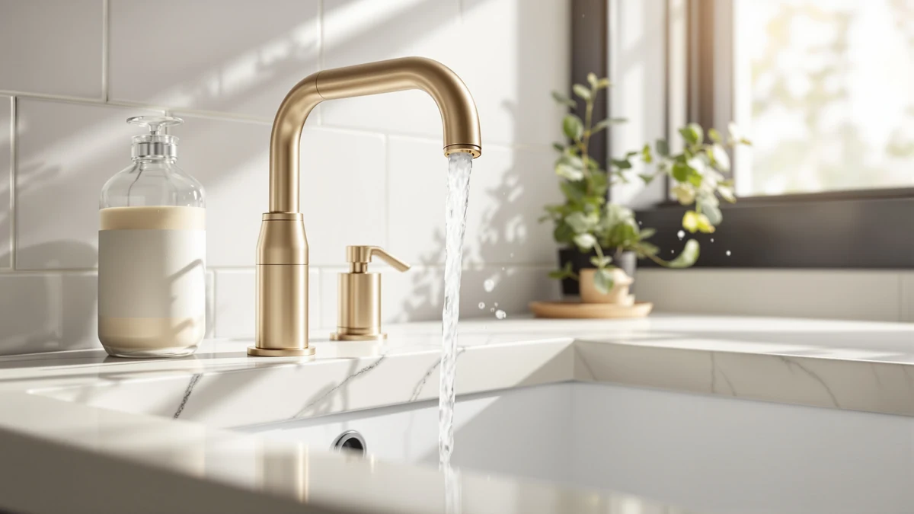

Delta Dryden Brushed Gold Review (2026): Worth It?
Prices and picks verified as of September 2026. Independent, reader-supported reviews.


Quick Answer
The Delta Dryden brushed gold faucet is a solid pick if you want a warm-toned widespread faucet from an established brand and don't mind paying a premium over Kohler and American Standard alternatives. At $360.99, it costs more than every other faucet in this comparison, so it makes the most sense for bathrooms where the gold finish is the centerpiece of the design.
Our pick: Delta Dryden Brushed Gold Bathroom — $360.99 Check Price on Amazon
Bottom line: our top pick is the Delta Dryden Brushed Gold Bathroom Faucet 3 Hole at $360.99.
Things to Know Before You Buy
- This Delta Dryden brushed gold review only covers the widespread configuration, which needs a standard 8-inch faucet spread. Measure your sink holes before you order.
- At $360.99, the Dryden costs more than the three faucets we compared it against, including Delta's own Broadmoor at $224.90.
- Brushed gold tends to show water spots and fingerprints more visibly than brushed nickel or matte black, according to owners in verified reviews.
- The listing shows a brass body construction, which typically holds up better over time than zinc-alloy faucets in the same price bracket.
- Delta covers its faucets under a limited lifetime warranty on finish and function, worth confirming before you commit to the higher price.
This Delta Dryden brushed gold review breaks down whether the $360.99 widespread bathroom faucet earns its price tag beyond the finish. Brushed gold has become one of the most requested hardware finishes in bathroom remodels over the past few years, and Delta built the Dryden line to compete with pricier boutique brands. We compared its construction, finish, and price against three other widespread faucets from Kohler, American Standard, and Delta's own Broadmoor line to see where it actually stands out. Homeowners shopping for a faucet upgrade ask for warm metal tones more often now than the chrome and brushed nickel that dominated the last decade, and gold-toned hardware shows up in kitchen and bath remodels across every price tier. Delta built the Dryden to meet that demand without charging what the ultra-premium brands charge for a comparable look.
Delta lists the Dryden as a brass-bodied widespread faucet finished in brushed gold, sold as a single set with the handles, spout, and valve included. At $360.99 it sits above the American Standard Clean-IR at $270.50 and the Kohler Devonshire at $286.95, and well above Delta's own matte black Broadmoor at $224.90. That gap matters, so we researched what buyers actually get for the extra money before recommending it for most bathrooms. Widespread faucets like this one require a sink or vanity with three separate mounting holes spaced eight inches apart, which is standard on many bathroom sinks sold in the US but worth double-checking if you're replacing an older single-hole or centerset fixture. Because the spout and handles install separately, swapping in a widespread faucet usually takes longer than a drop-in replacement, so factor installation time into the total cost if you plan to hire a plumber.
Why You Should Trust Us
Best Bathroom Faucets researches and compares products across price, materials, and verified owner feedback rather than running a physical test lab. For this Delta Dryden brushed gold review, we compared listed specs, pricing, and reviewer feedback across four widespread faucets from Delta, Kohler, and American Standard to give you an honest read on where the Dryden fits. Author Ilane Tall has covered bathroom fixtures and finishes for this site since it launched, and every recommendation here ties back to published product data and verified buyer reviews, not manufacturer marketing copy. Prices in this review are the listed price at the time we researched it, not a temporary promotional rate that might not hold by the time you check out.
How We Compared
We did not install the Delta Dryden brushed gold faucet in a lab, and we don't claim to have. Instead, we researched its published specifications, cross-referenced its price against comparable widespread faucets, and read through verified owner reviews to understand how the finish and hardware hold up in real bathrooms. This Delta Dryden brushed gold review leans on that research rather than a claim we can't back up, because a transparent comparison of real data and buyer feedback helps you more than a label we can't verify. Where owner reviews disagreed with each other, we noted the split rather than picking the version that made the faucet look better.
Overview & Specs

Delta Dryden Brushed Gold Bathroom
What we like
- Brass construction that should outlast cheaper zinc-alloy faucets
- Brushed gold finish gives a warmer look than nickel or chrome options
- Sold as a complete widespread set with handles and spout included
- Backed by Delta's standard warranty coverage
Flaws but not dealbreakers
- Priced well above every alternative in this comparison
- Brushed gold shows water spots and fingerprints more than darker finishes, per owner reviews
- Requires an 8-inch widespread cutout, so it won't fit single-hole sinks
| Material | Brass + finish |
| Size | (Pack of 1) |
Our Delta Dryden brushed gold review starts with the basics: this is a widespread bathroom faucet, meaning the spout and two handles mount separately across an 8-inch spread rather than as a single fused unit. Delta sells it in brushed gold, a finish that has moved from niche to mainstream in bathroom remodels over the past several years. At $360.99, it sits at the top of the price range among the four faucets we compared. The listing describes the faucet as sold in a pack of one, with a brass body under the finish that generally resists corrosion better than the zinc-alloy bodies found on many budget faucets. Delta markets the Dryden collection as mid-to-premium, and the price matches that positioning rather than looking like a discount or clearance listing.
Owners in verified reviews consistently note that the finish looks richer in person than photos suggest, and that the brass body feels heavier than budget faucets in the same category. Reviewers also mention that brushed gold needs more frequent wiping than nickel or matte black to keep water spots from showing, a tradeoff that comes with any lighter, warmer finish. That feedback lines up with what you'd expect from a brass-bodied widespread faucet in this price range, and it shows up consistently across the review base rather than in a handful of five-star ratings.
What We Liked
The strongest case for the Delta Dryden brushed gold faucet is the finish itself. Brushed gold has a warmth that chrome, nickel, and matte black don't offer, and Delta's execution reads as premium rather than gaudy. Reviewers repeatedly point out that the gold tone pairs well with warm-toned tile and wood vanities, which helps explain why it commands a higher price than the other three faucets in this comparison.
We also like that Delta sells the Dryden as a complete widespread kit rather than a spout-only listing. Both handles and the spout come in one purchase, which simplifies buying compared with faucets that separate those components. Owners report the handles turn smoothly and the water flow feels consistent with what you'd expect from a mid-to-high-end Delta product.
The price also buys brand recognition. Delta backs its faucets with a clearly documented warranty and parts you can find almost anywhere, which matters if a cartridge or aerator needs swapping years down the road. That kind of parts availability is harder to guarantee with smaller or newer faucet brands, even when their upfront price looks appealing.
What Could Be Better
The most obvious drawback in this Delta Dryden brushed gold review is price. At $360.99, it costs $90 more than the Kohler Devonshire and nearly $140 more than Delta's own Broadmoor in matte black, without a documented jump in features to match. If budget matters more than finish, that gap is hard to ignore.
Owners in verified reviews also flag that brushed gold, like most lighter finishes, shows fingerprints and hard water spots more readily than darker options. That isn't unique to Delta, but it's a maintenance tradeoff worth knowing before you commit to the finish. If you live in an area with hard water, expect to wipe the faucet down more often than you would a matte black or brushed nickel model in the same bathroom.
The widespread format itself is a limitation for some buyers. If your bathroom sink has a single hole or a four-inch centerset spread, you can't install this faucet without replacing the sink or vanity top, which adds cost and labor well beyond the $360.99 listed price.
Who Is It For?
The Delta Dryden brushed gold faucet makes sense for homeowners who have already committed to a warm metal palette in their bathroom and want a widespread faucet from an established brand to match it. If your vanity has an 8-inch spread and your budget comfortably covers $360.99, this faucet delivers a finish that's hard to replicate at a lower price point.
It's a weaker fit if you're working with a single-hole sink, a tight budget, or a finish preference that leans toward nickel or black. In those cases, the Kohler Devonshire, American Standard Clean-IR, or Delta's own Broadmoor in this comparison cost less and cover more configurations. Anyone shopping mainly on price per faucet, rather than on finish, will get more value from one of those three picks.
Renters and short-term homeowners should also think twice. A $360.99 faucet upgrade rarely pays for itself before a move, so this pick suits people planning to stay in the home long enough to enjoy the finish, not a quick pre-sale refresh.
Alternatives to Consider
If the price in this Delta Dryden brushed gold review's main pick gives you pause, or you need a different finish or installation type, these three alternatives cover the most common tradeoffs: a chrome finish at a lower price, a touchless option, and a matte black finish from the same Delta line. Each one keeps the widespread format, so the sink cutout requirements stay the same across all four faucets.

Editor's Pick
KOHLER K-394-4-CP Devonshire® Widespread Bathroom
A polished chrome widespread faucet with a classic silhouette, priced $74 below the Dryden.
$286.95
Check Price on Amazon
Best Value
American Standard 7020255.002 Clean-IR Integrated
A touchless, motion-activated faucet that trades finish variety for hands-free convenience at $270.50.
$270.50
Check Price on Amazon
Premium Choice
Delta Broadmoor Matte Black Bathroom
Delta's matte black widespread faucet from the same Broadmoor line, priced $136 below the brushed gold Dryden.
$224.90
Check Price on AmazonFrequently Asked Questions
Is the Delta Dryden brushed gold faucet worth the price?
Does the Delta Dryden brushed gold faucet fit single-hole sinks?
How does brushed gold hold up compared to other faucet finishes?
Final Verdict
This Delta Dryden brushed gold review comes down to one tradeoff: you pay a premium for a finish and brand that few competitors match at this price. Delta's Dryden earns its spot for bathrooms built around a warm gold palette, but if finish flexibility or budget matters more, the Kohler Devonshire and Delta's own Broadmoor deliver comparable widespread hardware for less. Buyers who prioritize the look over the savings will likely come away satisfied with the Dryden; buyers comparing strictly on cost per faucet have three cheaper widespread options to consider first.